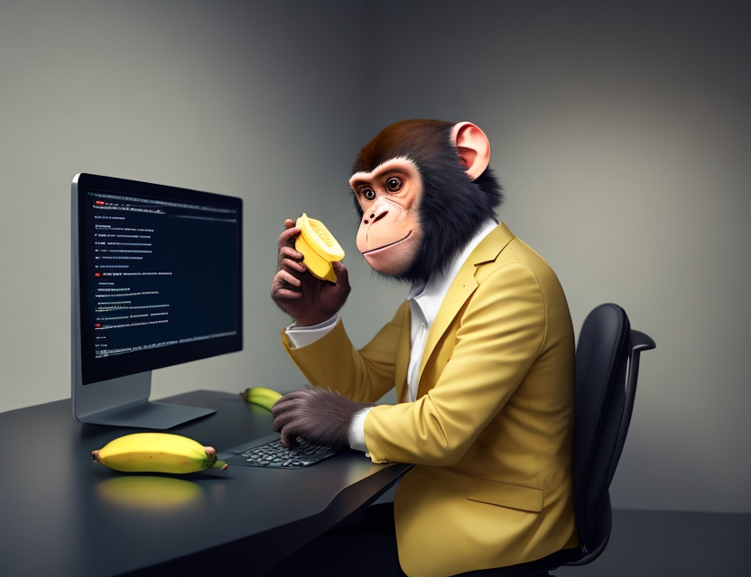
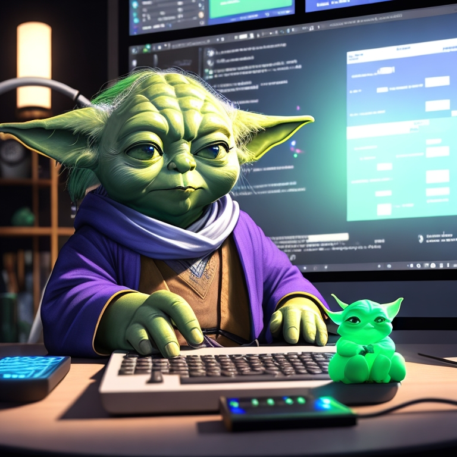

O INÍCIO (15/05/23)
O início da Jornada

Eu sempre gostei da área de tecnologia desde criança, e então através
da Rocketseat, resolvi arriscar e entrar nesse mundo cheio de desafios
e, ao mesmo tempo, magnifico. Estou muito satisfeito com essa decisão,
sabendo que aos poucos estou descobrindo e aprendendo ainda mais sobre
esse mudo da tecnologia.
Muito a aprender você ainda tem

Espero me aperfeiçoar cada vez mais após esse projeto, e para isso,
sei que deverei ter muita persistência, estudar muito e o mais
importante, praticar todos os dias. E dizer que apesar de sempre
admirar a programação, nunca pensei que seria capaz de programar.
Sempre pensei que era só para os nerds, mas hoje sei que é para quem
realmente gosta, por que quando tu gostas de algo, tu não vês
dificuldades e sim o prazer em conseguir superar las.